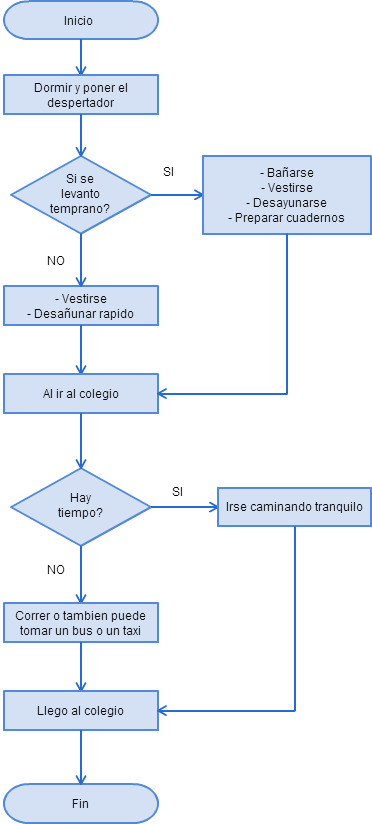
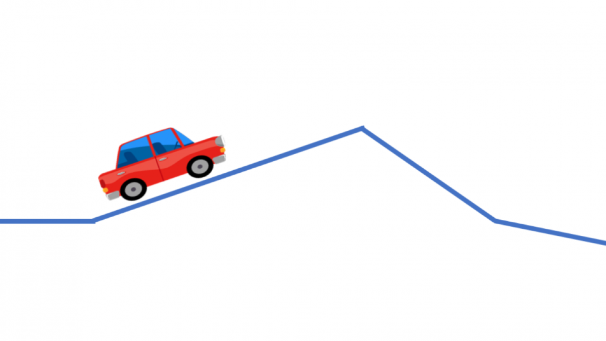
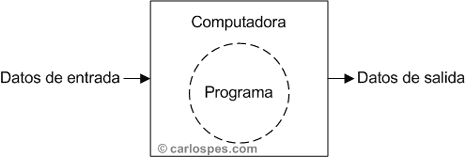

Mi puntuación actual es
La lógica de la programación es la organización coherente de las instrucciones del programa para que su objetivo sea alcanzado.
Desafío del programador
El gran desafío del programador es entonces montar la estructura del programa para que este sea ejecutado por la computadora.
¿Qué es un algoritmo en lógica de programación?
Tomemos un ejemplo simple de cómo hacemos para ir a estudiar

Con lo anterior Cualquier persona puede ir al colegio. Aún así es importante tener una secuencia correcta y una validación temprana de posibles eventos que se puedan presentar a lo largo del recorrido de un algoritmo

Son valores que componen cálculos o condiciones y están presentes en todas las partes del programa. En cambio la constante posee un dato definido al inicio del programa y no podrá ser alterado. Utilizando el ejemplo de la papa frita, podemos decir que el aceite es una variable, ya que puede estar caliente o frío. Creamos este ejemplo para mostrar la importancia de escribir la secuencia correcta de las acciones, y para entrenar el razonamiento.
Para crear un programa, y que la computadora lo interprete y ejecute, las instrucciones deben escribirse en un lenguaje de programación. En sus comienzos las computadoras interpretaban solo instrucciones en un lenguaje específico, del más bajo nivel, conocido como código máquina, siendo éste excesivamente complicado para programar. En realidad escribir en lenguaje ensamblador es básicamente lo mismo que hacerlo en lenguaje máquina, pero las letras y palabras son bastante más fáciles de recordar y entender que secuencias de números binarios. Entonces, se crearon los lenguajes de alto nivel.

Mientras que una tarea tan trivial como multiplicar dos números puede necesitar un conjunto de instrucciones en lenguaje ensamblador, en un lenguaje de alto nivel bastará con solo una. Una vez que se termina de escribir un programa, sea en ensamblador o en algunos casos, lenguajes de alto nivel, es necesario compilarlo, es decir, traducirlo completo a lenguaje máquina. Esta modalidad de trabajo es equivalente pero se realiza instrucción por instrucción, se traduce a medida que es ejecutado el programa.
En informática, un compilador es un tipo de traductor que transforma un programa entero de un lenguaje de programación a otro. Usualmente el lenguaje objetivo es código máquina, aunque también puede ser traducido a un código intermedio o a texto. La construcción de un compilador involucra la división del proceso en una serie de fases que variará con su complejidad. Incluye las fases correspondientes al análisis léxico, análisis sintáctico y análisis semántico.

Para que la computadora entienda nuestras instrucciones debe usarse un lenguaje específico conocido como código máquina, que la máquina lee fácilmente, pero que es excesivamente complicado para las personas. El lenguaje ensamblador sigue la misma estructura del lenguaje máquina, pero las letras y palabras son más fáciles de recordar y entender que los números. Posteriormente aparecieron diferentes lenguajes de programación, los cuales reciben su denominación porque tienen una estructura sintáctica semejante a la de los lenguajes escritos por los humanos, denominados también lenguajes de alto nivel. Anabella inició en las matemáticas a Ada quien, después de conocer a Charles Babbage, tradujo y amplió una descripción de su máquina analítica.
El nombre del lenguaje de programación Ada fue escogido como homenaje a esta programadora. A finales de 1953, John Backus sometió una propuesta a sus superiores en IBM para desarrollar una alternativa más práctica al lenguaje ensamblador, para programar la computadora central IBM 704. El primer manual para el lenguaje Fortran apareció en octubre de 1956, con el primer compilador Fortran entregado en abril de 1957. Esto era un compilador optimizado, porque los clientes eran reacios a usar un lenguaje de alto nivel a menos que su compilador pudiera generar código cuyo desempeño fuera comparable al de un código hecho a mano en lenguaje ensamblador.
En 1960 se creó COBOL, uno de los lenguajes usados aún en la actualidad, en informática de gestión. Entonces, se crearon los lenguajes de alto nivel, como lo fue BASIC en las versiones introducidas en los microordenadores de la década de 1980. Mientras que una tarea tan sencilla como sumar dos números puede necesitar varias instrucciones en lenguaje ensamblador, en un lenguaje de alto nivel bastará una sola sentencia.
Tres en linea
El juego de tres en linea tiene reglas que definen de manera sencilla un aganador, siguiendo unas reglas definidas previamente.
Reglas del juego: Cada Jugador elige las X o las 0, y en su turno debe poner una, intentando conseguir tres seguidas en linea vertical, horixontal o diagonal. Una vez se llenan todos los espacios se termina la partida, fuinalizando en tablas si ninguno consigue enlazar tres de sus fichas seguidas.
Tres en linea
- +
- +
- +
- +
- +
- +
- +
- +
- +